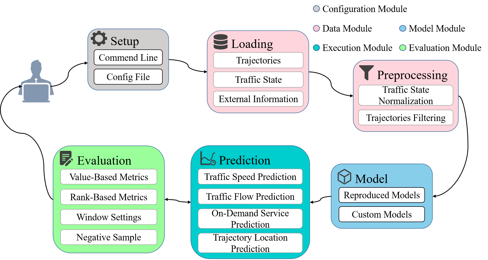

Introduction¶
HomePage|Docs|Datasets|Paper List
LibCity is a unified, comprehensive, and extensible library, which provides researchers with a credible experimental tool and a convenient development framework in the traffic prediction field. Our library is implemented based on PyTorch and includes all the necessary steps or components related to traffic prediction into a systematic pipeline, allowing researchers to conduct comprehensive experiments. Our library will contribute to the standardization and reproducibility in the field of traffic prediction.
LibCity currently supports the following tasks:
Traffic State Prediction
Traffic Flow Prediction
Traffic Speed Prediction
On-Demand Service Prediction
Origin-destination Matrix Prediction
Traffic Accidents Prediction
Trajectory Next-Location Prediction
Estimated Time of Arrival
Map Matching
Road Network Representation Learning
Features¶
Unified: LibCity builds a systematic pipeline to implement, use and evaluate traffic prediction models in a unified platform. We design basic spatial-temporal data storage, unified model instantiation interfaces, and standardized evaluation procedure.
Comprehensive: 60 models covering 9 traffic prediction tasks have been reproduced to form a comprehensive model warehouse. Meanwhile, LibCity collects 35 commonly used datasets of different sources and implements a series of commonly used evaluation metrics and strategies for performance evaluation.
Extensible: LibCity enables a modular design of different components, allowing users to flexibly insert customized components into the library. Therefore, new researchers can easily develop new models with the support of LibCity.
Overall Framework¶

Configuration Module: Responsible for managing all the parameters involved in the framework.
Data Module: Responsible for loading datasets and data preprocessing operations.
Model Module: Responsible for initializing the reproduced baseline model or custom model.
Evaluation Module: Responsible for evaluating model prediction results through multiple indicators.
Execution Module: Responsible for model training and prediction.
Cite¶
Our paper is accepted by ACM SIGSPATIAL 2021. If you find LibCity useful for your research or development, please cite our paper.
@inproceedings{10.1145/3474717.3483923,
author = {Wang, Jingyuan and Jiang, Jiawei and Jiang, Wenjun and Li, Chao and Zhao, Wayne Xin},
title = {LibCity: An Open Library for Traffic Prediction},
year = {2021},
isbn = {9781450386647},
publisher = {Association for Computing Machinery},
address = {New York, NY, USA},
url = {https://doi.org/10.1145/3474717.3483923},
doi = {10.1145/3474717.3483923},
booktitle = {Proceedings of the 29th International Conference on Advances in Geographic Information Systems},
pages = {145–148},
numpages = {4},
keywords = {Spatial-temporal System, Reproducibility, Traffic Prediction},
location = {Beijing, China},
series = {SIGSPATIAL '21}
}
Jingyuan Wang, Jiawei Jiang, Wenjun Jiang, Chao Li, and Wayne Xin Zhao. 2021. LibCity: An Open Library for Traffic Prediction. In Proceedings of the 29th International Conference on Advances in Geographic Information Systems (SIGSPATIAL '21). Association for Computing Machinery, New York, NY, USA, 145–148. DOI:https://doi.org/10.1145/3474717.3483923
The LibCity is mainly developed and maintained by Beihang Interest Group on SmartCity (BIGSCITY). The core developers of this library are @aptx1231 and @WenMellors.
If you encounter a bug or have any suggestion, please contact us by raising an issue. You can also contact us by sending an email to bigscity@126.com.